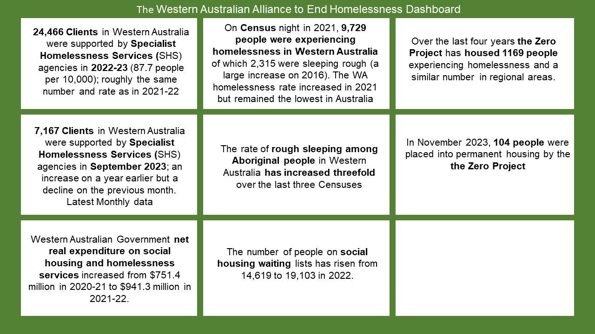

Western Australian Alliance to End Homelessness Dashboard |

|
The Western Australian Alliance Strategy to End Homelessness Dashboard is an evolving, accessible, and visual platform designed to present and report on outcomes relevant to the key targets of the Western Australian Alliance to End Homelessness (WAAEH). The Dashboard aims to answer the following question: Are we are ‘on track’ to end homelessness in Western Australia?
The WAAEH acknowledges the assistance of Western Australian homelessness agencies in preparing the Dashboard. The WAAEH wishes to acknowledge the funding to the WAEEH provided by the Sisters of St John of God Ministries without which the WAAEH Dashboard would not have been possible.
For detailed breakdowns, sources, and more accurate graphs please click on each graphic.

| Yearly Specialist Homelessness Service (SHS) data | |
|---|---|


AIHW 2023 Specialist Homelessness Services: yearly data. Latest: 2023. |
|
| Reducing the rate of homelessness in WA | |
|---|---|

AIHW 2023 Specialist Homelessness Services: yearly data. Latest: 2023. |
|
| Monthly Specialist Homelessness Service (SHS) data | |
|---|---|


AIHW 2023 Specialist Homelessness Services: monthly data. Latest: September, 2023. |
|
| Zero Project Outcomes | |
|---|---|

|
|
| ABS Census Homelessness data 2021 | |
|---|---|


ABS Estimating Homelessness: Census, 2021 |
|
| Trends in homelessness in WA | |
|---|---|
Ending chronic homelessness in WA
Reducing Aboriginal homelessness 
Addressing the needs of those experiencing homelessness 
|
Reducing the rate of homelessness in WA
Reducing regional homelessness 
|
| Funding of homelessness services | |
|---|---|
Western Australian Goverment expenditure
|
State and Territory Government expenditure
|
| Western Australian government funding of homelessness services | |
|---|---|


|


|
| State and Territory funding of homelessness services, 2021-22 | |
|---|---|


|


|
| Preventing homelessness in WA | |
|---|---|
Housing affordability and supply in WA
Young people in custody and out of home care 
Alcohol and drug use 
|
Poverty and unemployment in WA
Physical and mental health 
Domestic violence 
|